Chapter 1 Statistics and Health Data
Why health data?
Costs of health care expenditures
-US: over $3 trillion-Korea: about 154 trillion wonAdoption of Electronic Health Records (EHR) has increased \(9\times\) in US since 2008.
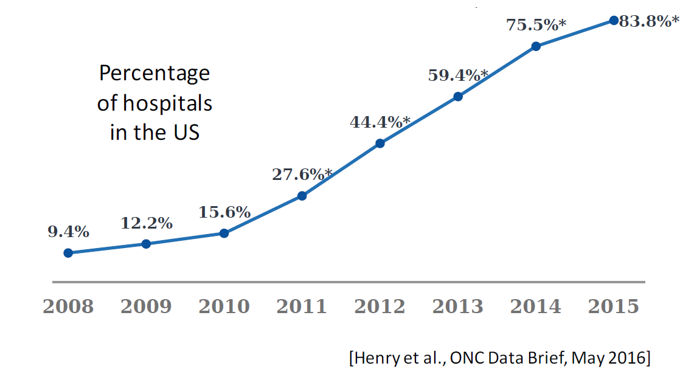
- Large datasets
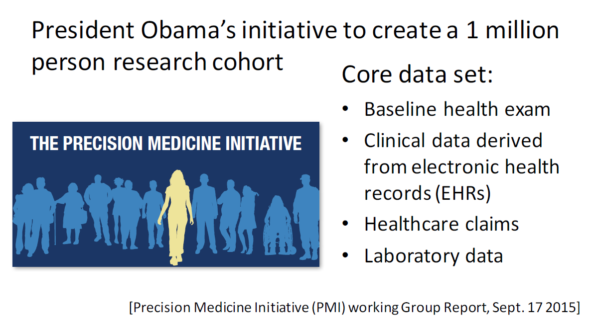
- Diversity of digital health data
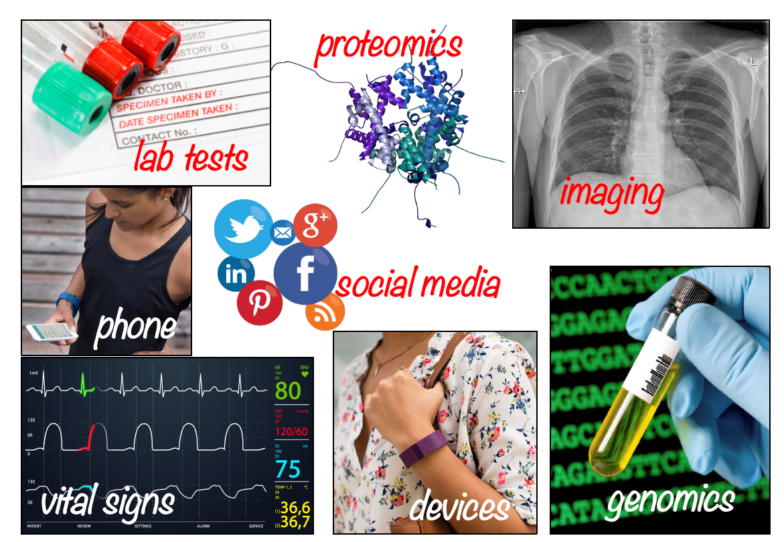
- Standardization
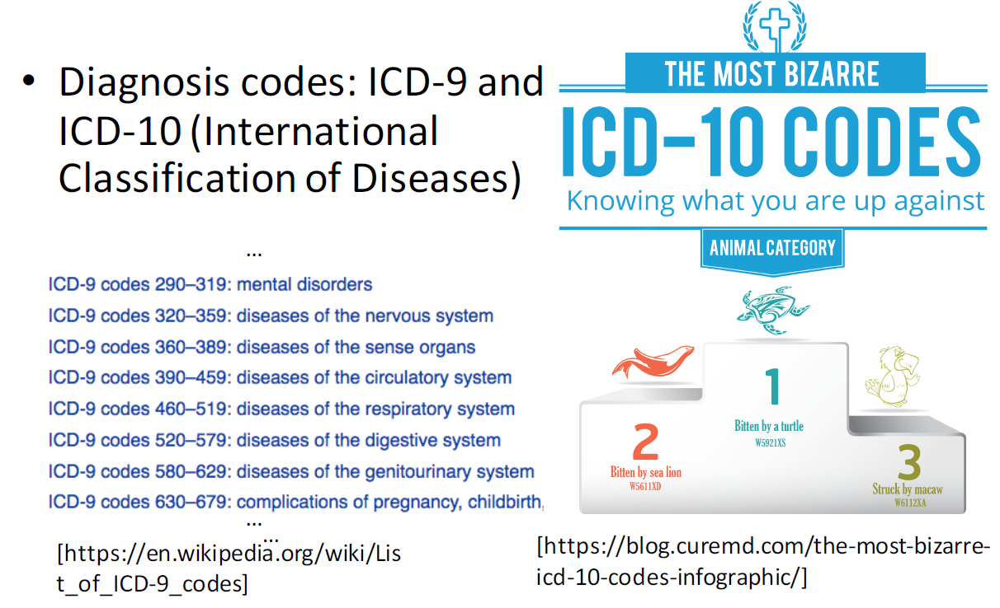
- Standardization
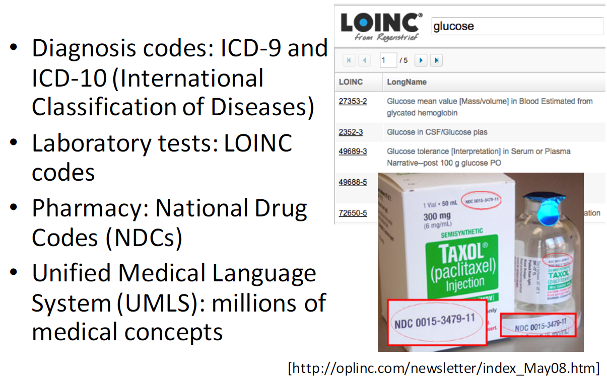
Types of Data
Demographics
-Age, sex, socio-economic status, insurance type, language, religion, living situation, family structure, location, work, …Vital signs
-Weight, height, pulse, respriation rate, body temperature, …Medications
-Prescriptions, over-the-counter drugs, illegal drugs, alcohol, …-Medication reconciliationLaboratory
-Components of blood, urine, stool, saliva, spinal fluid (CSF), ascitic fluid, joint fluid, bone marrow, lung, …Pathology
-Qualitative and quantitative examination of any body tissue, e.g., biopsy samples, surgical ’scraps"-Cell-level measurements, e.g., cell-surface antigensMicrobiology - organisms grown, typically from cultures
-Testing sensitivity to various antibiotics, at various dilutions Input/Output (fluids)Notes
-Discharge summary, Attending and/or Resident, Nurse-Speciallist : Radiology, Pathology, ECG, Nutrition, Respiratory, Social work, …-Consultant, Referring physician, Emergency DepartmentBilling
-Diagnoses (ICD-9 or 10)-Procedures (CPT and ICD)-Diagnosis Related Groups (DRG)Administrative
-Service-TransfersImaging
-X-ray, Ultrasound, CT, MRI, PET, Retinal, Endoscopy, Photographs
The evolution of health care data resources is creating vast new opportunities for population health research.
Key themes
-Health data resources and their features-Research question and its role in analysis-Mindset of organic statistics.
1.1 Introduction
“In treatment, there can be too much of a good thing.” - The Wall Street Journal (August 4, 2014)
Citation of Two studies
-Large patient databases had been used to link blood pressure and blood sugar levels with health outcomes.Blood pressure study
-Medical records of nearly 400,000 Kaiser Permanente patients who were taking prescription drugs for hypertension.-Showed lower blood pressures had higher risk of death or end-stage renal disease than those with intermediate levels.Blood sugar study
-Medical claims from over 33 million beneficiaries-Showed that hospital admission rates for hypoglycemia had increased over time, ultimately exceeding admission rates for hyperglycemia.Question?
-The control of diabetes is the methods to improve the hyperglycemia?
Statistical analyses of large databases
- Raise questions
- Provide answers that can eventually improve health systems
Statistics for the study of
-Health care delivery-Utilization-OutcomeClassical statistical methods and methods to include algorithmic approaches designed for predictive purposes and big data.
1.2 Statistics and Organic Statistics
There are many ways to define statistics.
Fundamentally, statistics is how we make sense of the world through data.
-Via the process of statistical analysis.Statistical analysis translates questions into mathematical formulations or models
-Uses the data to learn sensible models.-Ultimately, applies the models to address the original questions.
Statistics is therefore a pipeline that links question and data to answer and impact.
Statistics = model fitting?
-Turns statistics into a collection of recipes.-Turns statistical analysis into an exercise in picking the right recipe for the data at hand.-Wide availability of modern software packagesObjective:
-Learn the statistical methods and models with health data.-More conceptual frame than mathematics.
1.3 Statistical Methods and Models
Mostly about hypothesis-driven Statistical methods and also, some algorithmic approaches.
-Under current evolution in the health outcomes research, The important thing is to be familiar with both the traditional statistical paradigm and modern predictive ideas and methods.The goal is to identify biological signal and to be able to separate it from the noise.
-Done by statistical inference, formally implemented via statistical hypothesis testing.
In the case of health care outcomes, traditional statistical models must account for the typically non-normal nature of the outcome variables.
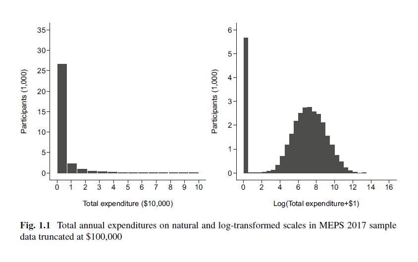
(left-hand panel) Histogram of total medical expenditures in the Medical Expenditure Panel Survey (MEPS) in 2017 and those of After logarithmic transformation (right-hand panel)
-Extremely right-skewed with a long tail.-Lots of zeros, reflecting participants who did not record any medical care costs for that year.-Appropriate Methods : linear regression, generalized linear regression models, overdispersed data models, transformation and retransformation approaches for skewed data, and two-part regression models and so on.
The predictive analytics paradigm does not generally aim to learn about the data-generating mechanism.
Rather, it learns about patterns in the data that enable predicting the outcome of interest with an accuracy.
-These patterns may not even be describable mathematically.-And also, predictive algorithm may be similarly opaque.Algorithmic methods are relatively novel in the health services and outcomes literature;
-But, much less structured and generally makes fewer assumptions than traditional statistical approaches-May not provide direction for specific interventions to improve outcomes.-Perform well to predict outcome but, not easy to interpret the associations between any of the predictors and the outcome.Which approach is to be preferred?
—Depends on the objective of the analysis and how the results are to be used in practice.
1.4 Health Care Data
Types of health care data available for research into the drivers of health care utilization and outcomes
Administrative data
-Collected as a matter of course for the financial and administrative aspects of health care delivery.-Medical claims and electronic medical records-Valuable but, generally not collected for research purposes-Many challenges arise when using them to address research questions.Non-administrative data
-Registries and surveys-Gathered for surveillance or research purposes-Yet, have many limitations stemming from the manner in which they are collected.
As a health data analyst, it is important to match a given research question to the data resource that is most likely to provide a valid answer.
- Summary information of each data type
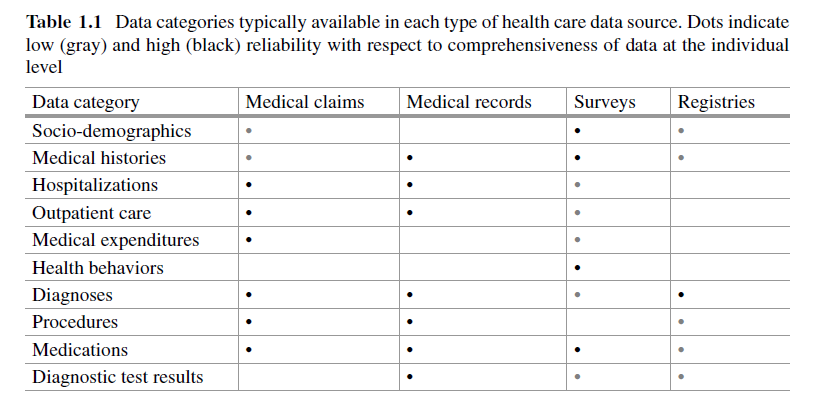
Different data types may be linked to provide a more comprehensive record.
Example: estimating the prevalence of hypertension in a specified population.
-From population surveys that specifically ask participants whether they have been previously diagnosed with the condition.-From medical claims that bill for encounters or medications is associated with a hypertension diagnosis code.-From electronic medical records, which provide measurements of patients’ health status including (frequently) blood pressure.
Each of these sources is subject to its own caveats and limitations.
- It is important to understand which individuals are represented in each data source and adjust or interpret the analysis in light of over-, non-, or under-represented groups.
- And it is critical to understand the data-generating process in each setting.
1.4.1 Medical Claims
Medical claims code the billable interactions between insured patients and the health care delivery system.
The purpose of a claim : to generate payment from the payer for the services provided.
-Includes the information needed to justify the claim and quantify its expense.-Diagnosis and procedure codes, prescribed medications, and medical care costs.-Diagnoses - International Classification of Diseases (ICD) 9 or 10-Procedure code : services rendered to patients.There are several coding systems for procedures.
-The ICD-10 system includes codes for inpatient procedures.-The Current Procedure Terminology (CPT) codes and the Healthcare Common Procedure Coding System (HCPCS), which builds on the CPT codes, describe procedures conducted as part of outpatient or ambulatory care.-Many CPT and HCPCS codes overlap, but HCPCS codes also capture non-physician services, such as ambulance rides, durable medical equipment use, and prescription drug use.How is a medical claim produced?
-Trained claims coders extract the relevant information from the medical record and clinical documentation.-And Then, this information is translated into insurance claims and bills for patients.-Due to the Complexity, the same service may be billed differently depending on the payer.Example: New York Times article
-Two friends who got drive-through coronavirus tests at the same emergency center in Austin.-Received very different bills depending on whether they paid cash (199) or billed their test to their health insurance company (6408).Although medical claims are generated for billing purposes and not for research
-Contain a wealth of information that pertains to important research questions about delivery of care, disparities in care, and the effectiveness and quality of care.-Hence, claims databases are increasingly being used for research purposes.
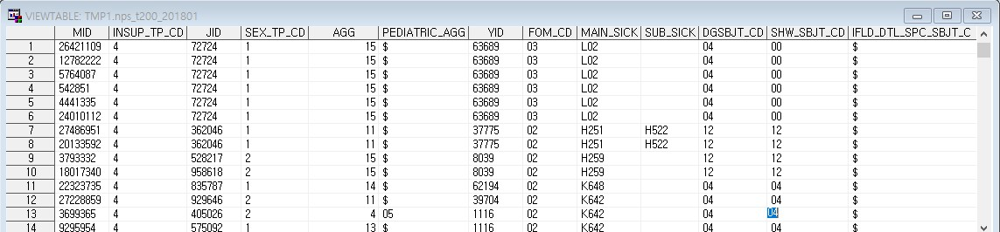
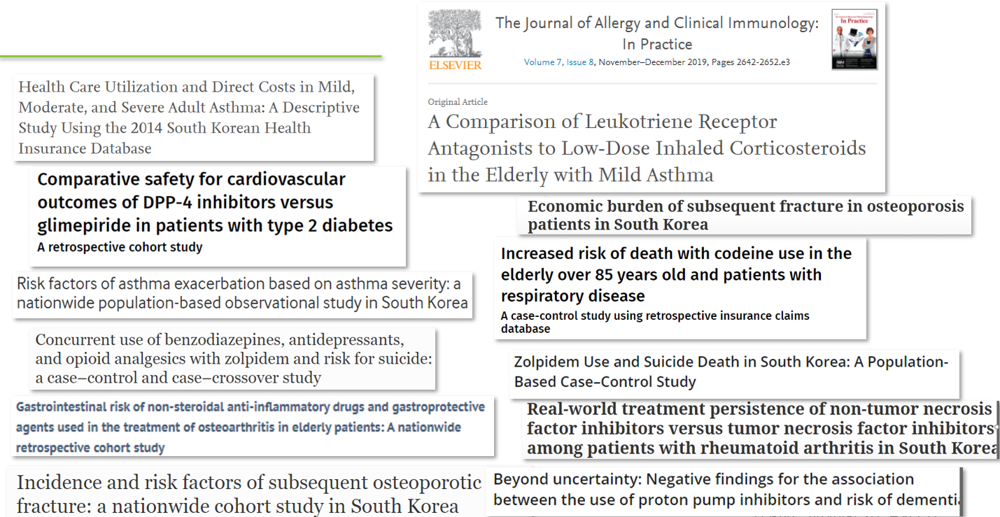
Limitations of claims data
-Only insured patients can be studied using claims databases, and only covered services are represented.-Thus, claims data are not broadly population representative, and they are by nature incomplete.-Example: information on non-prescription drugs is lacking.-Further, claims can only be recorded if patients are enrolled in a health care plan.-Missing if coverage lapses or if they switch to a different payer.Claims data must therefore be studied in the context of health plan enrollment, which may change over time.
While claims data are frequently used to analyze health care utilization, key predictors such as socio-demographic and socio-economic factors are generally not available at the individual level; this may limit predictive and causal studies.
Claims data are also frequently used to learn about patterns of care for a specific condition, but because of the wide variability in how claims are coded, such analyses invariably under ascertain individuals with that condition.
In general, the sensitivity and specificity of medical claims can be limited, particularly when the target population is somewhat nuanced, e.g., identifying cancer cases with a specific disease stage or distinguishing Type I and Type II diabetes.
A major limitation of medical claims is that they do not include health status measurements or diagnostic test results.
-The blood sugar study focused on hospital admissions for hyper- and hypoglycemia; by identifying these conditions on the basis of the discharge diagnosis, it could be conducted using medical claims.-However, if a measurement of blood sugar level had been required to confirm the diagnosis, the study would have needed access to the patients’ medical records.It can be difficult to get access to medical claims data without a formal proposal, funds, and (in some cases) a demonstrably effective data security protocol.
1.4.2 Medical Records
Medical records contain comprehensive electronic clinical data obtained at the point of care.
Example of electronic health record


Track health conditions, interventions, and outcomes at the individual patient level for the purpose of diagnosis and treatment.
-Same structured diagnosis and procedure information as in medical claims.All patients who received care regardless of insurance status and incorporate much richer information on the health status of the patients and their care.
Unstructured data, such as physician notes, imaging reports, vital status measurements, and diagnostic test results.
Medical records offer tremendous potential for understanding processes of care, researching effectiveness of interventions, and predicting health outcomes in real-world settings.
However, like claims, medical records are not generated for research purposes, and their limitations must be understood.
Limitation medical records data
-Quality: completeness, correctness, concordance (with other sources), plausibility, and currency (or timeliness).-Problem of phenotyping—identifying a diagnosis, procedure, or outcome from a medical record.From an analytic perspective, a medical record is a real-time surveillance instrument that does not follow a statistical design or plan.
-Whether information is recorded or not may be linked with the underlying condition of the patient.Sicker patients generally have more diagnostic tests or more frequent vital status assessments than healthier patients.
-These realities may lead to informative missing data patterns, which may bias estimates of associations between predictors and outcomes.While the potential for medical record data to advance health research is clear, raw medical record data are generally proprietary to their health system and are not routinely accessible to outside researchers.
These data include highly sensitive information about individuals who are protected by the Health
Insurance Portability and Accountability Act; therefore, the majority of medical record data are available for research only on a limited, tightly controlled basis.
-However, data from medical records are exported and curated to many other agencies.There are public resources
-Comprehensive Hospital Abstract Reporting System-National Inpatient Sample-Substance Abuse and Mental HealthServices Administration facility data-commercial data collections
1.4.3 Health Surveys
Health surveys record
-Patients responses-Socio-demographics, health behaviors and conditions, and access to care and utilization patterns.
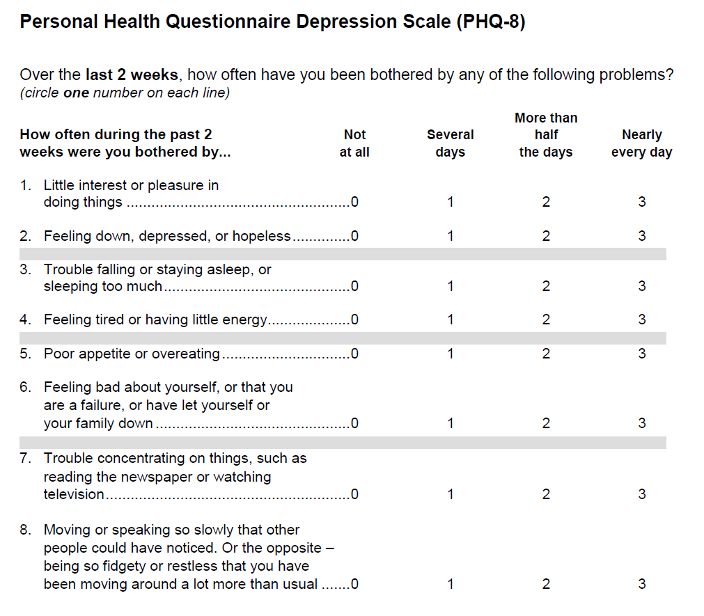
- Three large national publicly available health surveys
The National Health Interview Survey (NHIS): Nation’s largest in-person household health survey.
- Since 1957, the NHIS has been conducted annually by the Census Bureau on behalf of the National Center for Health Statistics (NCHS).
- Cross sectional and collects information on a different sample every year.
- Wide variety of topics (medical conditions, health insurance, doctor visits, and health behaviors).
- Results from the NHIS have been used to monitor trends in the burden of chronic conditions and health care access and to track progress toward national health objectives.
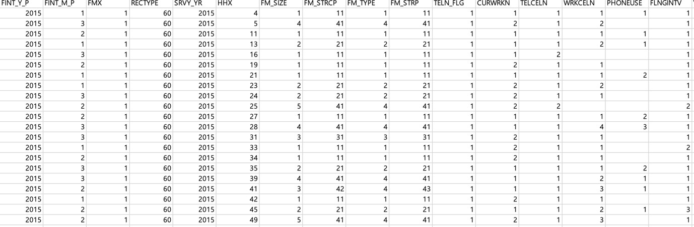
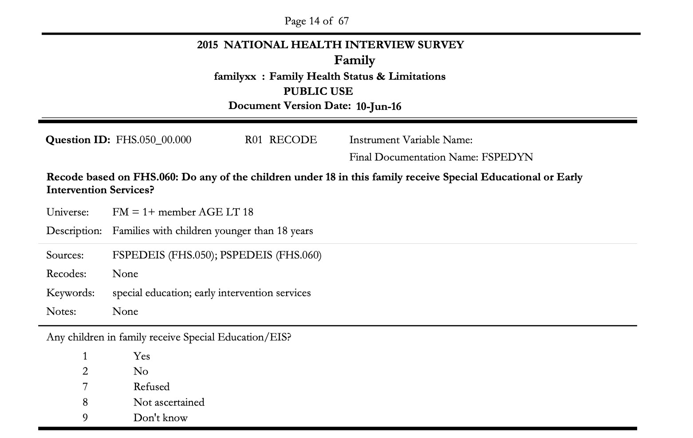
The National Health and Nutrition Examination Survey (NHANES)
- Also conducted by the NCHS
- One step further than the NHIS in that it not only interviews participants but also includes a full physical examination and blood test.
- Important health indicators, such as blood pressure, body mass index, and hemoglobin A1c.
- NHANES data have been crucial in providing the data to create growth charts for children, monitor the prevalence of obesity and overweight, and estimate the frequency of undiagnosed diabetes in the US.
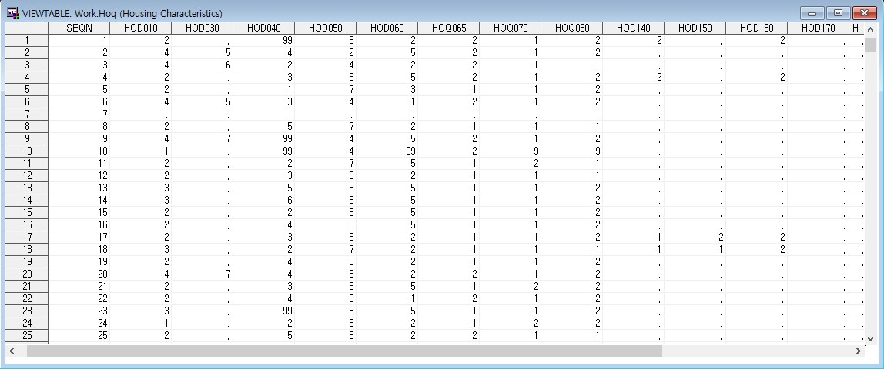
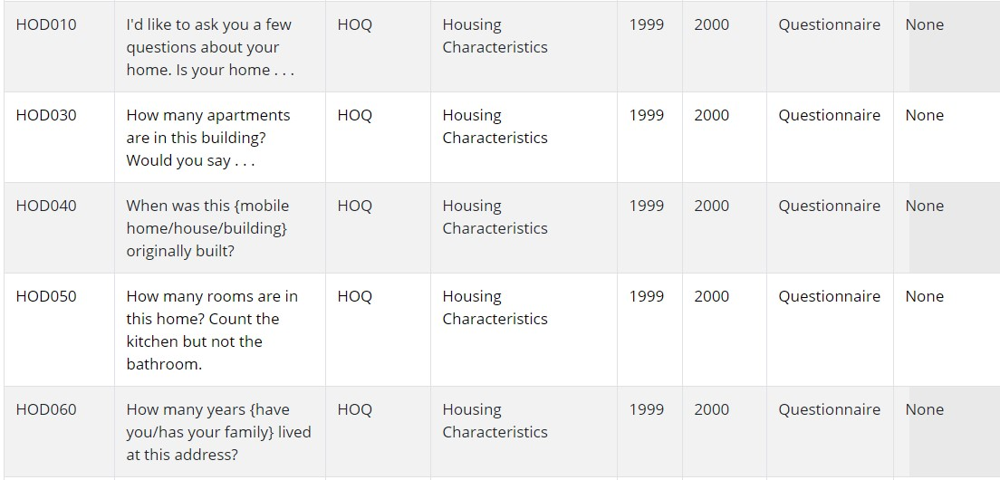
The Medical Expenditure Panel Survey (MEPS)
- Conducted by the Agency for Healthcare Research and Quality collects extensive information on health care utilization and expenditures for a subsample of NHIS households.
- Socio-demographic, health history, and health behavior variables from NHIS, health insurance information, inpatient, outpatient, prescription drug utilization, expenditures sourced from medical providers and health records.
- Rolling panel survey that enrolls participants annually and interviews them five times over a period of 2 years.
- Longitudinal data
- Useful in tracking health care expenditures, identifying the most costly medical conditions, and monitoring the use of and costs of different types of care in the population.
All of the aforementioned surveys are designed with complex sampling and weighting schemes to reduce the costs of survey administration and produce results that are population representative.
-Rather than simple random sampling, survey designs include stratification to control the proportion sampled within population subgroups and clustering to control survey costs.-Each observation in a survey is associated with a weight that reflects the number of individuals in the target population represented by that observation.-Survey documentation provides sampling scheme and weight estimation details and can be important in informing data analyses.-Important to understand these details and to track any changes in survey design over time.Many of the examples in this book use MEPS data.
-Rich environment for exploring topical health services questions while demonstrating specialized methods and techniques relevant for observational health care databases.Surveys are of enormous value because they directly query respondents for information that may be difficult or impossible to obtain from administrative data,
-Socio-demographic characteristics-Health behaviors-Individual perceptions and preferences.At the same time, surveys are subject to a host of potential biases.
-non-response bias-Recall bias-Social desirability biasAll of these can skew survey responses and/or lead to non-representative survey samples.
Mitigation of these biases requires extensive development and calibration of survey instruments and careful consideration of the mode of survey implementation.
1.4.4 Disease Registries
A registry is a corpus of non-administrative data collected for population surveillance of a specific condition or group of conditions.
Registries in the US
-Cancer-End-stage renal disease-Alzheimer’s disease-Down syndromeRegistries have a clearly specified objective, a set of variables designed to address the objective, and an infrastructure to collect the desired data items.
Difference from population surveys
-Not random samples-Surveillance, Epidemiology, and End Results (SEER) registry of the National Cancer Institute, are a complete census in certain regions.The SEER registry is an example of an established population disease registry.
-SEER collects information on all diagnosed cancer cases within a specific set of catchment areas (subregistries) in the US.-Objective: to track the burden of cancer incidence and mortality in the population.Once new cases have been identified, a set of patient- and disease-specific factors is abstracted by hospital-based cancer registrars.
-Individual-level demographics-Some socio-economic data at the census-tract level-Disease characteristics-First course of cancer-directed therapyFollowing diagnosis, information about survival and cause of death is obtained via linkage to vital status records from the NCHS.
The SEER registry is an indispensable tool for researchers and others interested in understanding how the profile of cancer is changing over time.
Two potential limitations
-Data quality-Representativeness
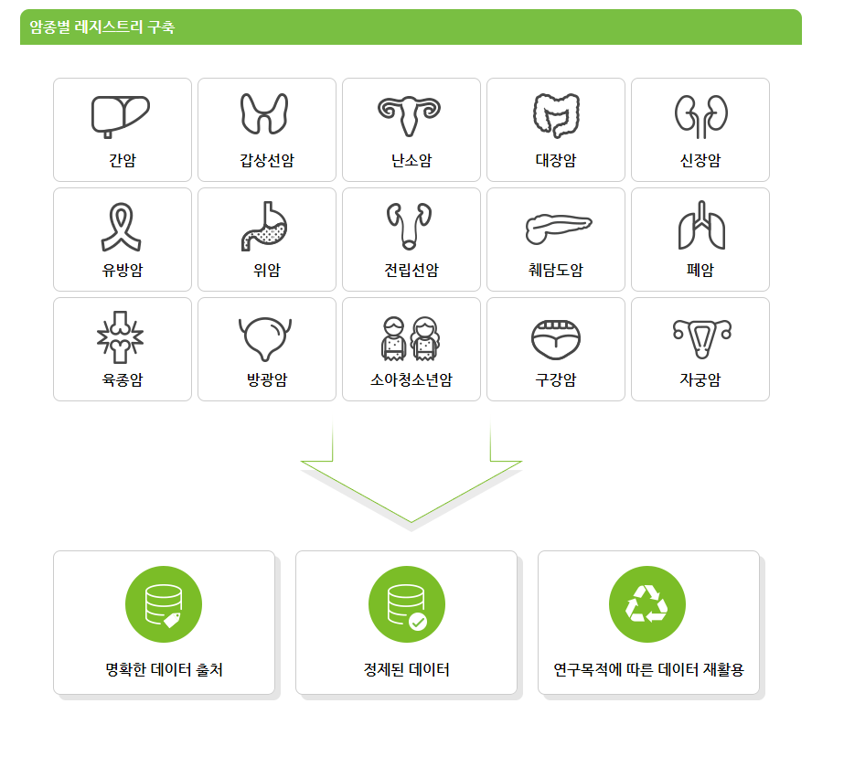

1.5 Outline of the Text
Chap. 2: Basic statistical background and hypothesis testing.
Chap. 3: Review standard linear regression modeling, quantile, and non-parametric regression.
Chap. 4: Methods for binary or categorical data.
Chap. 5: Methods for count data.
Chap. 6: Analysis of skewed cost data, including two-part models.
Chap. 7: Concept of resampling and bootstrapping.
Chap. 8: Causality, causal inference, and strengths and limitations of different designs for observational studies of health care outcomes.
Chap. 9: Designs used for health surveys.
Chap. 10: Some of the applied examples and some statistical learning algorithms.
1.6 Software and Data
R code to download data and to carry out the examples in this book is available at the GitHub page, https://roman-gulati.github.io/statistics-for-health-data-science/.
Our example analyses relied heavily not only on the R language and base packages but also on several R packages designed to facilitate reading, manipulating, visualizing, summarizing, and modeling data.
1.7 Loading MEPS data
Several methods are available for importing MEPS public use files (PUFs) into R. The easiest method is to use the read_MEPS function from the MEPS package, which was created to facilitate loading and manipulation of MEPS PUFs. Alternatively, R users can use the read.xport function from the foreign package to import SAS transport (.ssp) files from data years 1996-2017, or the read_fwf function from the readr package to import ASCII (.dat) files from data years 2018 and later.
Using the MEPS Package (all data years) The MEPS R Package was created to facilitate loading and manipulation of MEPS PUFs. It can be installed using the following commands:
library(devtools)
install_github("e-mitchell/meps_r_pkg/MEPS")
library(MEPS)The read_MEPS function can then be used to import MEPS data into R, either directly from the MEPS website, or from a local directory. This function automatically detects the best file format (.ssp or .dat) to import based on the specified data year.
In the following example, the 2017 (h197b) and 2018 (h206b) Dental visits files are automatically downloaded from the MEPS website and imported into R. Either the file name or the year and MEPS data type can be specified:
# Specifying year and MEPS data type
dn2017 <- read_MEPS(year = 2017, type = "DV")
dn2018 <- read_MEPS(year = 2018, type = "DV")
# Specifying MEPS file name
dn2017 <- read_MEPS(file = "h197b")
dn2018 <- read_MEPS(file = "h206b")More details for MEPS: MEPS: https://github.com/HHS-AHRQ/MEPS
Example
library(MEPS)## Loading required package: dplyr##
## Attaching package: 'dplyr'## The following objects are masked from 'package:stats':
##
## filter, lag## The following objects are masked from 'package:base':
##
## intersect, setdiff, setequal, union## Loading required package: foreign## Loading required package: stringr## Loading required package: tidyr## Loading required package: readr## Loading required package: httrlibrary(tidyverse)## -- Attaching packages --------------------------------------- tidyverse 1.3.1 --## v ggplot2 3.3.3 v purrr 0.3.4
## v tibble 3.1.2 v forcats 0.5.1## -- Conflicts ------------------------------------------ tidyverse_conflicts() --
## x dplyr::filter() masks stats::filter()
## x dplyr::lag() masks stats::lag()1.7.1 Data Loading
dset <- read_MEPS(file="h201")1.7.2 Visualize histogram of total expenditures
totexp_panel <- function(data, varname){
dset <- data
dset <- dset %>% mutate(SCALEDTOTEXP17=TOTEXP17/10000,
LOGTOTEXP17=log(TOTEXP17+1))
dset <- dset %>% select(SCALEDTOTEXP17, LOGTOTEXP17)
if(varname == 'SCALEDTOTEXP17'){
xmax <- 10
xstep <- 1
ymax <- 35
ystep <- 5
xlabel <- '\nTotal expenditure ($10,000)'
bpoints <- c(seq(0, xmax, length=15), max(dset[['SCALEDTOTEXP17']]))
} else {
xmax <- 16
xstep <- 2
ymax <- 6
ystep <- 1
xlabel <- '\nLog(Total expenditure+$1)'
bpoints <- 20
}
hdat <- hist(dset[[varname]], breaks=bpoints, plot=FALSE)
hset <- with(hdat, data.frame(mids, counts))
hset <- hset %>% mutate(scaledcounts=counts/1000)
gg <- ggplot(hset)
gg <- gg+geom_bar(aes(x=mids, y=scaledcounts), stat='identity')
gg <- gg+scale_x_continuous(name=xlabel,
breaks=seq(0, xmax, by=xstep),
limits=c(0, xmax))
gg <- gg+scale_y_continuous(name='Participants (1,000)\n',
breaks=seq(0, ymax, by=ystep),
limits=c(0, ymax))
print(gg)
}totexp_panel(dset, 'SCALEDTOTEXP17')## Warning: Removed 1 rows containing missing values (position_stack).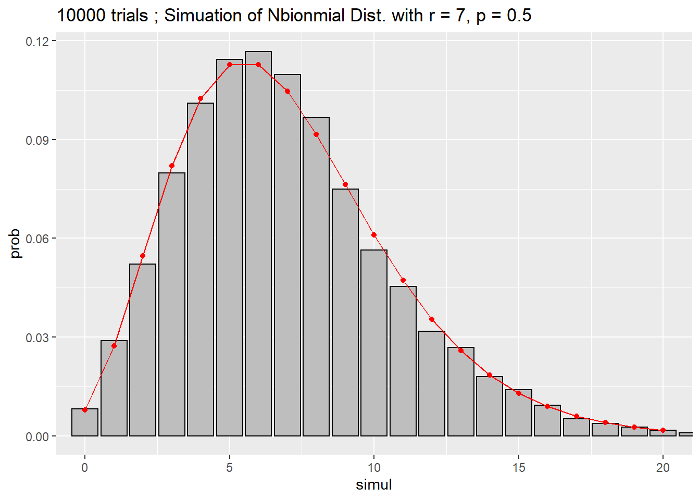
totexp_panel(dset, 'LOGTOTEXP17')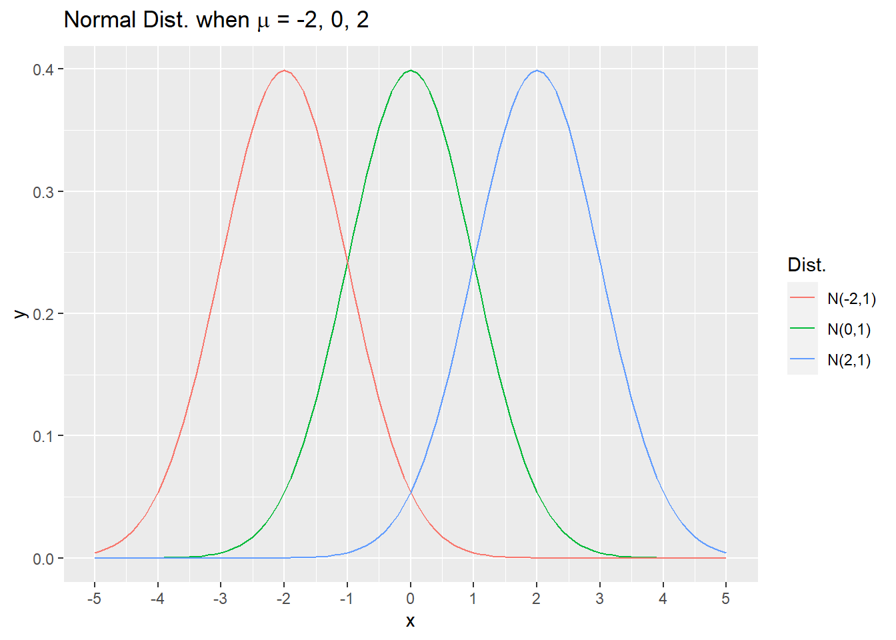